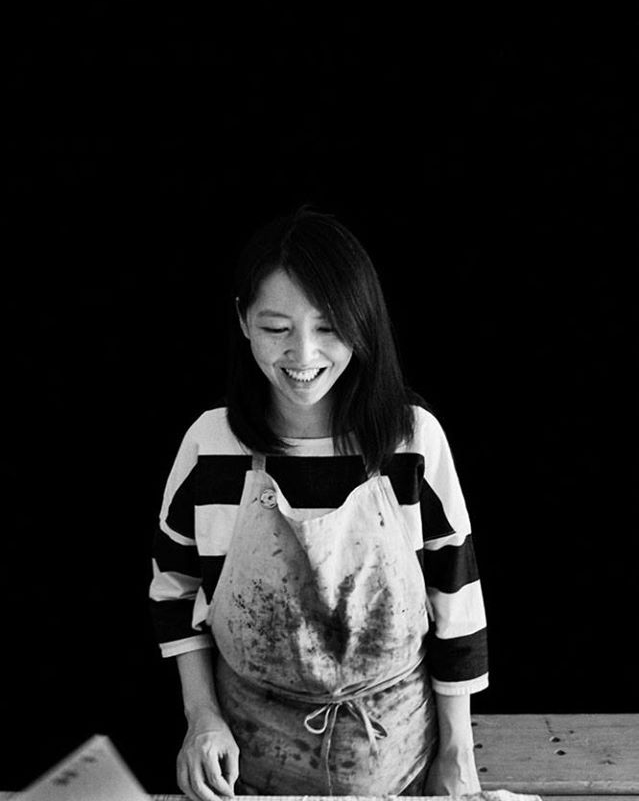

<!DOCTYPE html>
<html lang="fr">
    <head>
        <meta charset="UTF-8">
        <!-- Enable RWD -->
        <meta name="viewport" content="width=device-width, initial-scale=1, shrink-to-fit=no">

        <title>Yi-Ping Huang / Artiste・Poète</title>
        <!-- 檢查網頁簡述
        <meta name="description" content="Personal Web Site">
         -->
        <meta name="keywords" content="immersion, performance, installation, sculpture, estampe, littérature, livre d'artiste, édition, lecture, photographie"> 
        <meta name="author" content="Yi-Ping Huang, 黃伊萍">
        

        <!--
        <link rel="icon" href="/favicon.ico" type="image/x-icon">
        <link rel="shortcut icon" href="/favicon.ico" type="image/x-icon">
        -->
        
        <link rel="stylesheet" href="../css/reset.css" media="all">
        <link rel="stylesheet" href="../css/style.css" media="all">
        <link rel="stylesheet" href="../css/a_propos.css" media="all">
        
    </head>

    <body>
        <!-- ----------------------版型Header 開始-------------------- -->
        <!-- |||||||||||||||||||||||||||||||||||||||||||||||||||||||| -->
        <header id="header">
            <input type="checkbox" id="burger">
            <label for="burger" class="toggle"><!-- &#9776; --></label>
               
            <ul class="langue_list" id="lg_list">
                <li>
                    <input type="radio" id="fr" name="langue" value="fr" class="langue" checked>
                    <label for="fr"><a href="#">FR</a></label>
                </li>&thinsp;/
                <li>
                    <input type="radio" id="en" name="langue" value="en"  class="langue">
                    <label for="en"><a href="../en/a_propos.html">EN</a></label>
                </li>&thinsp;/
                <li>
                    <input type="radio" id="zh" name="langue" value="zh"  class="langue">
                    <label for="zh"><a href="../zh/a_propos.html">繁</a></label>
                </li>&thinsp;       
            </ul>
            
            <nav class="main_menu" id="nav_zone">           
                <h1 class="logo">
                    <a href="../index.html" >Yi-Ping Huang</a>
                    <!-- 要檢查螢幕大小變化時 如果螢幕縮到最小 名字會被換行的問題 -->
                </h1> 
                
                <ul class="menu_list" id="menu_fr">
                    <!-- 要加上效果：滑鼠滑到主選單選項時 加上效果或記號標示 -->
                    <li><a href="immersion_perf.html">Immersion&thinsp;/&thinsp;Performance</a></li>
                    <li><a href="livre_ecrit.html">Livre d'artiste&thinsp;/&thinsp;Écriture</a></li>
                    <li><a href="installation_sculpture.html">Installation&thinsp;/&thinsp;Sculpture </a></li>
                    <li><a href="estampe_edition.html">Estampe&thinsp;/&thinsp;Édition</a></li>
                    <li><a href="photographie.html">Photographie</a></li>
                    <li>&nbsp;</li>
                    <!-- <li>&nbsp;</li> -->
                    <li><a href="actu.html">Actualité</a></li>
                    <li><a href="exposition.html">Exposition</a></li>
                    <li><a href="a_propos.html">À propos</a></li>
                    <li><a href="contact.html">Contact</a></li>
                </ul>
                <ul class="menu_list" id="menu_en">
                    <!-- 要加上效果：滑鼠滑到主選單選項時 加上效果或記號標示 -->
                    <li><a href="immersion_perf.html">Immersion&thinsp;/&thinsp;Performance</a></li>
                    <li><a href="livre_ecrit.html">Artists' book&thinsp;/&thinsp;Writing</a></li>
                    <li><a href="installation_sculpture.html">Installation&thinsp;/&thinsp;Sculpture </a></li>
                    <li><a href="estampe_edition.html">Printmaking&thinsp;/&thinsp;Edition</a></li>
                    <li><a href="photographie.html">Photography</a></li>
                    <li>&nbsp;</li>
                    <!-- <li>&nbsp;</li> -->
                    <li><a href="actu.html">News</a></li>
                    <li><a href="exposition.html">Exhibition</a></li>
                    <li><a href="a_propos.html">About</a></li>
                    <li><a href="contact.html">Contact</a></li>
                </ul>
                <ul class="menu_list" id="menu_zh">
                    <!-- 要加上效果：滑鼠滑到主選單選項時 加上效果或記號標示 -->
                    <li><a href="immersion_perf.html">空間&thinsp;/&thinsp;行為藝術</a></li>
                    <li><a href="livre_ecrit.html">藝術家書籍&thinsp;/&thinsp;書寫</a></li>
                    <li><a href="installation_sculpture.html">裝置藝術&thinsp;/&thinsp;雕塑 </a></li>
                    <li><a href="estampe_edition.html">版畫&thinsp;/&thinsp;複數性作品</a></li>
                    <li><a href="photographie.html">攝影&thinsp;/&thinsp;畫報</a></li>
                    <li>&nbsp;</li>
                    <!-- <li>&nbsp;</li> -->
                    <li><a href="actu.html">近況</a></li>
                    <li><a href="exposition.html">展覽</a></li>
                    <li><a href="a_propos.html">關於我</a></li>
                    <li><a href="contact.html">與我聯絡</a></li>
                </ul>
                
            </nav>  
            <div id="voile"></div>
        </header>
        <!-- ||||||||||||||||||||||||||||||||||||||||||||||||||||||||-->
        <!-- ----------------------版型Header 結束-------------------- -->
        
        
        <main>
            <!-- --------------------網頁變動內容 Main 開始----------------- -->
            <!-- |||||||||||||||||||||||||||||||||||||||||||||||||||||||||-->

            <!-- 解決縮排問題 修改文字 -->
            <div class="a_propos">
                <figure class="autoportrait">
                    </image>
                    <figcaption>Photo &copy; Mathieu Morel, prise pendant le festival de micro-édition Marché Noir, 2019</figcaption>
                </figure>
                
                <section class="intro">
                    
                    <h2 class="hidden_title">À propos</h2>
                    <p>
                        <h4 class="t_bleu">
                            <br><br>
                            Artiste, poète <br>
                            Et peut-être encore, ingénieure <br><br>
                        </h4>
                    </p>
                    
                    <p>
                        Née à Changhua, basée à Taïwan actuellement. <!-- Travaille entre France et Taïwan. --> <br>
                        Diplômée de l'école de beaux-arts de Rennes en 2019.<br><br>
                    </p>
                    <p>
                        Mes projets se déploient en relation à mes appréciations et fascinations pour l’espace, à des phénomènes qui se dérobent à notre regard. <br>
                        Des expériences vécues seule, les temps perçus dans l’espace deviennent mes propres ressources et inspirations. 
                        Mes réflexions s’appuient sur la fluidité de l’insaisissable dans l’espace et la disponibilité volontaire à un moment présent.<br>
                    </p>
                    <p>
                        Des interrogations sur la perception, la sensation, l’attention, 
                        la présence dans l’espace et l’interchangeabilité de points de vue, de l’échelle 
                        orientent mes travaux afin d’offrir une temporalité, faire de l’immersion un dispositif et faire vivre l’expérience. <br>
                    </p>
                    <p>
                        De plus, la lecture m’est fondamentale, ainsi que certaines pratiques 
                        qui s’y rattachent telles que la traduction ou simplement des réflexions sur le langage. <br>
                        Mes idées s’expriment au travers de l’écriture, le livre d’artiste, la photographie, 
                        la sculpture et l’installation, l’estampe, l’édition, voire la performance.
                    </p>            
                </section>
            </div>

            <section class="parcours">
                <h2 class="hidden_title">Parcours</h2>

                <section class="formation">
                    <dl>
                        <dt><h3>Formation / Diplôme</h3></dt>
                        <dd>
                            École Européenne Supérieure d’Art de Bretagne (EESAB) site de Rennes, Rennes, France  (2014 - 2019) <br>
                            DNSEP et DNAP Art obtenus avec félicitations du jury             
                        </dd>
                        <dd>
                            Diplôme Universitaire d’Étude de Français, Niveau C1, Université Rennes 2, Rennes, France (2013 - 2014)
                        </dd>
                        <dd>
                            Licence de sciences informatiques et d’ingénierie de l’information, Université Feng Chia, Taichung, Taiwan (2002 - 2006) <br>
                            Obtention de la Bourse de Han-Hei - un mois d’études en anglais à l’Université de l’Ohio, Etats-Unis
                        </dd>
                    </dl>
                </section>

                <section class="experience">
                    <dl>
                        <h3>Expérience Professionnelle</h3>
                        <dd>
                            Enseignante, Cours de dessin pour les enfants de 4-6 ans accompagnés par leurs parents,<br>
                            invitée par la bibliothèque de Hsin Tian Kong, Taipei, Taiwan (oct. - nov., 2020)
                        </dd>
                        <dd>
                            Monitrice de l’atelier d’estampe, EESAB Rennes, France (2016 - 2019)
                        </dd>
                        <dd>
                            Animation en sérigraphie pour l’atelier créatif proposé par l’artiste Simon Poligné <br>
                            à l’occasion de son exposition <I>Retour à l’hypothèse</I>, Artothèque de Vitré, Vitré, France (28 fév. 2018)
                        </dd>
                        <dd>
                            Stagiaire en lithographie, À fleur de Pierre, Paris, France (juillet 2017)
                        </dd>
                        <dd>
                            Médiation de l’exposition <I>Dancers sleeping inside a building</I> de Jean-Pascal Flavien <br>
                            lors des Ateliers de Rennes/Biennale d’art contemporain, Musée de la danse, Rennes, France (oct. - déc., 2016)
                        </dd>
                        <dd>
                            Stagiaire de sérigraphie, La Presse Purée, Rennes, France (juin 2016)
                        </dd>
                        <dd>
                            Ingénieure en télécommunication et websystème, Taipei, Taïwan (2006 - 2013)
                        </dd>
                    </dl>
                </section>

                
            </section>
            <!-- |||||||||||||||||||||||||||||||||||||||||||||||||||||||||-->
            <!-- -------------------網頁變動內容 Main 結束------------------ -->
        </main>
            
           
        <!-- ----------------------版型 Footer 開始--------------------- -->
        <!-- |||||||||||||||||||||||||||||||||||||||||||||||||||||||||| -->
        <footer>&copy; 2014 Yi-Ping Huang 黃伊萍</footer>
        <!-- |||||||||||||||||||||||||||||||||||||||||||||||||||||||||| -->
        <!-- ----------------------版型 Footer 結束--------------------- -->
        

    </body>
    

</html>

<!--       
<script type="text/javascript" src="../js/preLang.js"></script> 
-->  
<script type="text/javascript" src="../js/menu.js"></script>  
